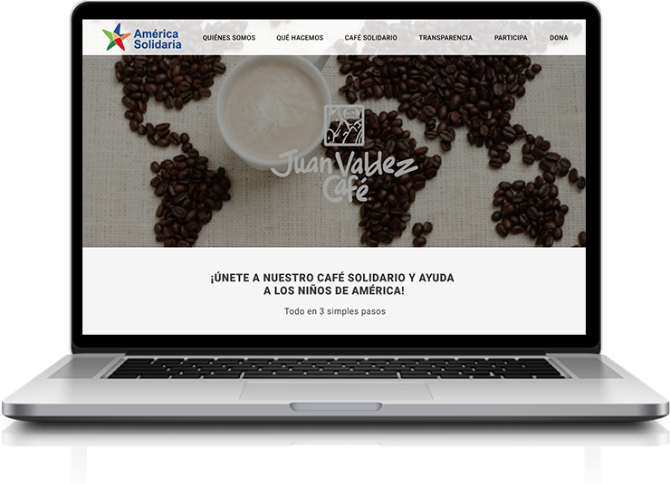
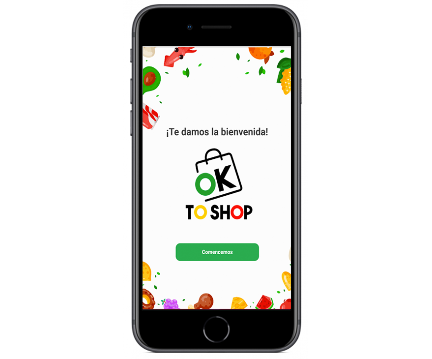

Diseñadora de Experiencia de Usuario, con fascinación por la mejora continua y facilidad para encontrar inconsistencias es lo que me define.
Diseño de Servicio
América Solidaria
América Solidaria es una Organización que combate la situación de pobreza y vulnerabilidad infantil. El propósito de esta, es que ningún niño de América se encuentra en estas condiciones y, además, que sean parte de las decisiones que les afectan.


Diseño de Interfaz
OK TO SHOP
Este proyecto consistió en rediseñar la aplicación Ok to Shop, identificando los principales problemas: navegación, interfaz, funcionalidad y usabilidad. Además, crear una propuesta gráfica funcional para mejorar la experiencia del usuario en la aplicación.
Diseño de Interfaz
OK TO SHOP
Este proyecto consistió en rediseñar la aplicación Ok to Shop, identificando los principales problemas: navegación, interfaz, funcionalidad y usabilidad. Además, crear una propuesta gráfica funcional para mejorar la experiencia del usuario en la aplicación.
Diseño de Interfaz
COPADAS
Es un podcast feminista que logra abordar temas complejos, que van desde la violencia de género, sexualidad, salud mental, hasta moda. Lo que cautiva a su público fiel es que hablan directo, claro y sin eufemismos.